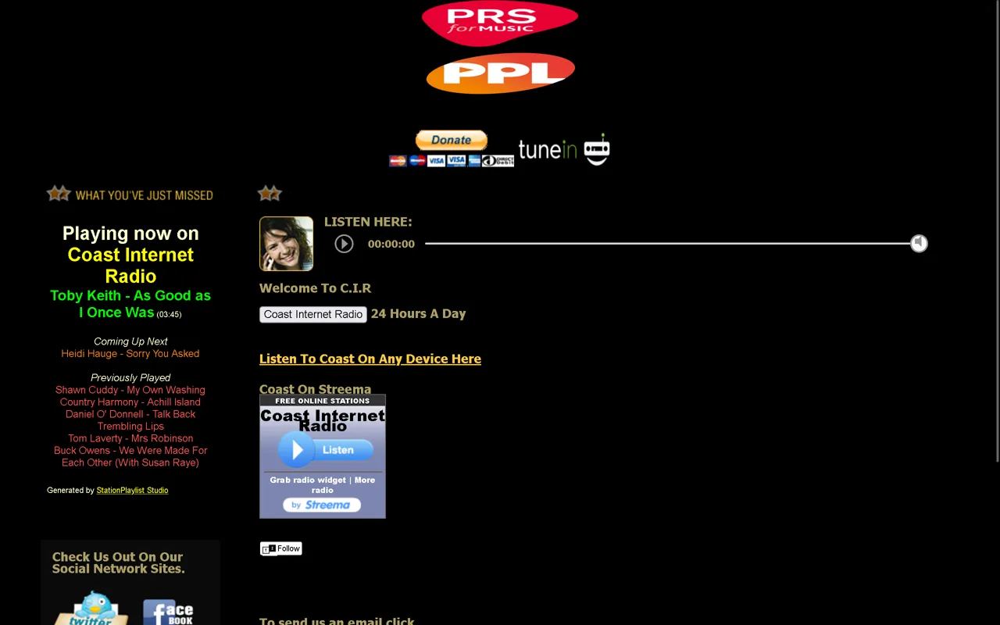
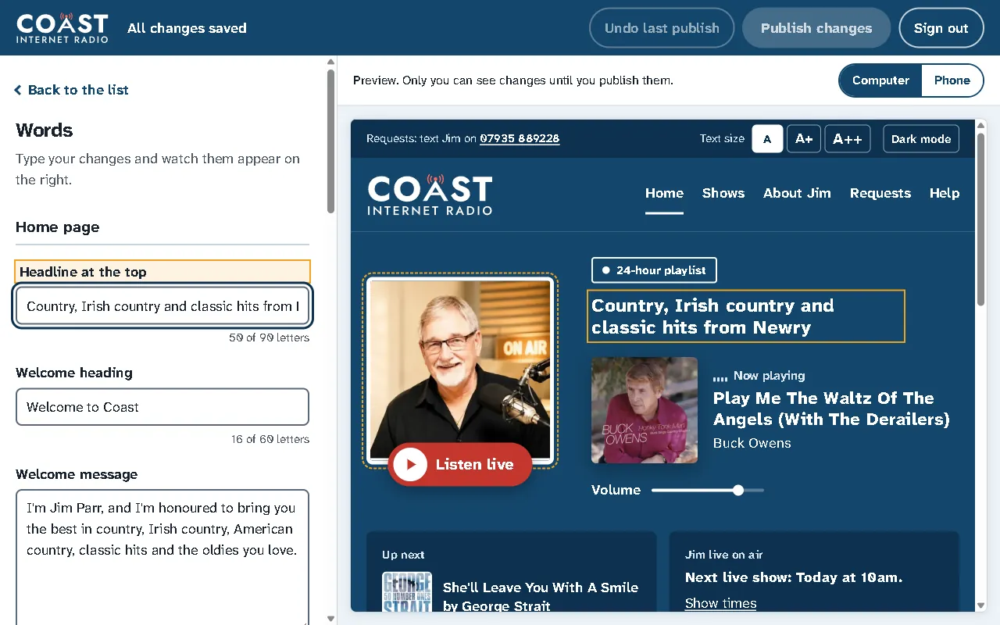

Coast Internet Radio
The website for Coast Internet Radio, a small station in Newry run by my relative Jim Parr. I built the first version in May 2026 and rebuilt it from scratch in October 2026. I'm the only developer: I build it, host it and maintain it, unpaid.
I wrote the first version using online tutorials, my class notes and AI tools, which helped with debugging, research and some of the more complex code. I rebuilt it and got help from Claude Code on the more difficult pages like the admin page and some bug fixes. I tested the changes, committed them and deployed them. I also set up the hosting on Netlify and the Cloudflare Workers myself.



The problem
The station's original website offered several separate ways to listen, including a small embedded player, a direct stream link, a Streema widget and a TuneIn button, with no single obvious place to start. It wasn't designed for phones, and its stream was a plain HTTP address.
Most of Coast's listeners are middle-aged or older and not especially confident with technology, so the site had to make listening simple: open the page and press play.
My first version fixed the stream and gave the site one Listen button, but I wasn't happy with the design, the admin page could have been much easier for Jim, and every change went live straight away with no way to check it first. So I rebuilt it.
What I built
- One large Listen live button, and a player bar at the bottom of every page that opens a full-screen player. The music keeps playing while listeners move between pages.
- Now playing, up next and the last five songs, with album covers from Apple's iTunes search
- A tag that shows whether Jim is live or the 24-hour playlist is on, worked out from his show times in UK time
- Text size buttons and dark mode, remembered on the listener's device
- Song request and feedback forms that email the station
- An editor so Jim can change the site himself
The editor for Jim

Jim isn't confident with computers, so the editor had to be visual rather than a form full of settings. He sees the real website beside a short list of things he can change. Anything with an orange dashed outline can be clicked to edit it, and every change appears in the preview straight away.
- He can change the words, the photos, the main colour, the order of the home page, an announcement bar, a news story, his show times and the contact details.
- An "I'm live now" switch covers extra shows, and "No live show today" covers missed ones. Both switch themselves off, so neither can be left on by mistake.
- Changes save as a draft while he types. Listeners only see them when he presses Publish and confirms, and Undo goes back up to ten versions.
Decisions
Designing for the audience
I looked at how stations for older listeners lay out their websites and based the rebuild's structure on Boom Radio's: large readable text, one clear Listen button, and separate pages for shows, the presenter, requests and help. I kept the station's navy and red, and modernised the mast in Jim's original logo rather than replacing it.
Getting the stream onto an HTTPS site
The station's stream is only available over HTTP, and browsers block HTTP audio on a secure HTTPS page. I set up two small Cloudflare Workers that pass the audio and the track information through over HTTPS. The trade-off is that they're an extra service to keep running.
Publishing without redeploying
Each deploy on Netlify uses build credits, so publishing doesn't redeploy the site. Jim's changes are stored with Netlify Blobs, and every page loads them from one address that Netlify caches. Publishing clears that cache so listeners see changes straight away. The trade-off is that the site now relies on server functions, so each page is still built with the original wording and works on its own if they're ever down.
Keeping the editor safe
The password is never stored, only a slow scrypt hash of it, and Jim stays signed in with a signed cookie that other websites can't use. Every change is checked on the server before it's saved, so nothing typed into the editor can add code to the page, and uploaded photos are checked to be real images.
What went wrong
- My first design for the rebuild looked generic, so I threw it away and started again from how real stations for older listeners lay out their sites.
- Netlify rewrites forms when it registers them, and it cut the feedback form's thank-you message off at an apostrophe. I only noticed on the live site.
- A code review found that words Jim typed while a publish was still sending could be marked as live when they weren't. The fix publishes a copy of the draft, and it was checked by deliberately slowing the request down in a browser test.
How changes are checked
Code changes are tried locally first with Netlify's dev server, which runs the site and its functions with separate test storage. The server code has 21 unit tests, covering the sign-in, the checks on Jim's changes and the photo uploads. Jim previews every change and confirms it before it goes live, and he can undo it afterwards.
Limitations and what's next
- The two main JavaScript files are around 900 lines each and should be split into smaller modules.
- The tests don't run automatically before each deploy yet.
- Adding a new piece of text Jim can edit means changing four files.
- Photos Jim replaces are kept rather than deleted.